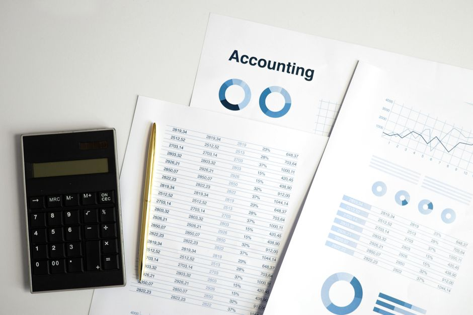

The Cost Matrix Nobody Writes Down
Accuracy is not a business objective. Here is how to turn asymmetric risk into a loss function your model actually optimises.

The metric that quietly betrays the business
Every classification project I have worked through starts with someone asking for accuracy, or precision, or an F1 score, as if these numbers were neutral. They are not. Accuracy treats a missed fraud transaction the same as a false alarm on a harmless one. F1 balances precision and recall as though a bank's compliance team and its customer support team suffer equally from each type of mistake. In practice they never do, and the gap between what we optimise and what the business actually loses money or reputation on is where good models quietly fail in production.
The uncomfortable truth is that almost nobody writes the cost matrix down. It exists implicitly in someone's head, usually a product owner or a risk officer, and it gets translated badly into a proxy metric because that is easier to compute. I have seen teams spend weeks tuning hyperparameters to squeeze out a fraction of a percent of AUC while the actual deployed threshold was chosen by someone eyeballing a spreadsheet the night before launch. The model was fine. The decision layer on top of it was the actual product, and nobody had engineered it with the same care.
This matters because a loss function is not just a training detail, it is a statement of what you believe the world will punish you for. If you train on a symmetric loss and deploy into an asymmetric world, you are optimising for the wrong thing and then discovering the mismatch through complaints, chargebacks, or a regulator's letter. Writing the cost matrix down forces the conversation to happen before deployment rather than after.
Building the matrix: a worked example
Take a churn prediction problem for a subscription business. There are four outcomes: predicting churn when the customer stays (false positive), predicting stay when the customer churns (false negative), and the two correct predictions. Suppose a false positive means offering a retention discount to someone who was never leaving, costing the business roughly £15 in lost margin. A false negative means losing a customer worth, say, £240 in expected lifetime value, because no intervention was triggered in time. True positives and true negatives carry no direct cost beyond the baseline cost of running the model.
Written as a matrix, this is stark: a false negative is sixteen times more expensive than a false positive. Yet a model trained with plain cross-entropy and evaluated with accuracy will happily trade ten prevented false positives for one extra false negative if that is what minimises the aggregate error count, because cross-entropy has no idea that these errors are not equal. The model is doing exactly what it was told, which is the problem: it was told the wrong thing.
Once the matrix is explicit, you have real options. You can reweight the loss function directly, for instance scaling the positive class loss by the ratio of costs so that the sixteen-to-one asymmetry is baked into training rather than bolted on afterwards. You can leave the loss alone and instead move the decision threshold, choosing the point on the precision-recall curve that minimises expected cost rather than the default 0.5 cutoff. You can also use cost-sensitive resampling, though I am wary of this as a first move because it changes the data distribution the model sees rather than the decision rule, and it is easy to lose track of what you actually adjusted.
The calculation itself is simple arithmetic once the matrix exists: expected cost equals the false positive rate times its cost plus the false negative rate times its cost, weighted by class prevalence. If churn affects five per cent of customers, the expected cost per thousand customers under a naive threshold might be dominated almost entirely by the false negative term, even if the false positive rate looks worse on paper. Seeing this number laid out changes what people optimise for in review meetings, because suddenly the conversation is in pounds rather than percentage points.

Where this goes wrong and how to keep it honest
The first failure mode is treating the cost matrix as fixed and universal when it is neither. Costs shift with context: a false positive in fraud detection during a high-volume sales period costs more in customer friction than the same false positive on a quiet Tuesday. If your matrix is a single set of numbers baked into training, you have frozen an assumption that the business itself does not hold constant. The more robust approach is to keep the cost weighting in the decision layer, applied at inference time to model scores, so it can be updated without retraining.
The second failure mode is leakage-adjacent but subtler: tuning the threshold or cost weights on the same validation set you use for model selection, repeatedly, until the numbers look good. This is a form of overfitting to your own cost assumptions. I always hold out a separate slice, temporally later than training and validation, purely for checking that the chosen threshold generalises. If the expected cost on that final slice looks meaningfully worse than on validation, the threshold was tuned to noise, not signal.
The third failure mode is assuming the people who gave you the cost numbers were right. Cost estimates from stakeholders are often guesses dressed up as facts, and it is worth stress-testing the final decision under a range of plausible costs rather than a single point estimate. If your chosen threshold is stable across a reasonable range, say the false negative cost is anywhere between fifteen and twenty times the false positive cost, you have a robust decision. If small changes to the assumed ratio flip your recommendation entirely, that is worth flagging honestly rather than quietly picking the number that supports the answer you already wanted.
The practical takeaway is not that every project needs a fully worked financial model before anyone touches a notebook. It is that somebody, ideally you, should ask out loud what a false positive costs and what a false negative costs, in whatever units the business actually cares about, before choosing a metric. Write the numbers down, even roughly. Use them to pick a threshold or reweight a loss, and revisit them when the business context shifts. The model was never the hard part; making its mistakes cost what they are supposed to cost is.